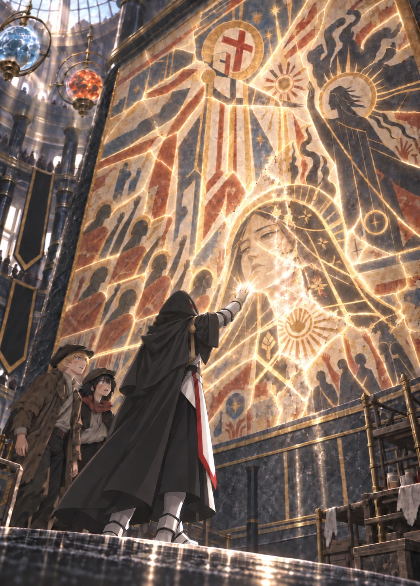

Volume One · Chapter Five
The Face Beneath the Lie
“We should go,” Orin whispered.
Ultimos did not move. He studied the painted gate.
“The western arch had already fallen,” he said.
His voice barely carried beyond them.
Kisaya looked at the civilians painted inside the white lattice.
“What?”
“Before Caedran arrived. The western arch collapsed when black fire reached the upper storehouse.”
His helmet shifted beneath the hood.
“There were no soldiers behind us.”
Orin followed his gaze.
Beside the painted Ultimos stood a second white mage. She wore pale robes beneath a short armored mantle. One hand touched the gate. The other extended the lines enclosing the crowd.
The painter had given her a thin, cruel smile.
The caption beneath her read only:
SERVANT OF THE GRASPING HAND.
A crack ran through her face from brow to jaw. Damp had lifted a section of plaster from one cheek. The symbol at her collar had been painted as a closed white fist.
“Fermina,” Ultimos said.
The name contained no anger.
The gentleness of it caught Orin unprepared.
“Who was she?” Orin asked.
Ultimos did not answer.
He stepped closer to the wall.
“The eastern foundation failed first,” he said. “She held it while her sister and I—”
He stopped.
Orin waited, but Ultimos continued as though the unfinished sentence had never been spoken.
“Caedran was a courier. He carried my order to open the lower road. He did not break the lattice.”
The painted archmage towered in black and gold, staff raised against the white prison.
Ultimos looked back at Fermina.
“Three hundred and twelve people crossed beneath that gate before the foundation gave way.”
Orin’s throat tightened.
“Did she—”
“She was still holding it when it fell.”
Noise continued around them.
Shoes crossed polished stone. A clerk laughed on the upper balcony. The teacher beneath the dome explained that the mural commemorated the courage of black mages who had placed themselves between helpless citizens and white tyranny.
No one lowered their voice or knew they were speaking over a grave.
Ultimos crossed the last few paces.
“Ultimos,” Orin said.
Ultimos had heard. His hand emerged from the gray sleeve anyway.
White metal caught the sunlight.
Two armored fingers touched the crack across Fermina’s painted face.

Pale geometry opened beneath them.
It was no larger than Orin’s palm.
Fine lines entered the plaster. The crack drew closed. Broken grains of pigment lifted from the ledge below and returned to the wall one by one, each finding a place within skin, hair, or the pale curve of a cheek.
The cruel smile disappeared.
Not erased.
Remembered.
The woman who emerged had a broad mouth set in concentration, one brow lower than the other, and tired eyes turned toward the civilians beneath the gate. A narrow scar crossed her chin. That face had never existed beneath the mural’s false paint. Ultimos supplied it from memory, including every imperfection.
Ultimos’s fingers moved to the closed fist at her collar.
The paint separated and rejoined.
The fist opened.
A many-rayed sun unfolded around it.
His fingers lingered over the reopened insignia.
Then the light spread beyond it.
Beyond Fermina’s face and insignia, memory gave way to the mural’s existing design. The restoration followed the continuous plaster outward, closing splits in the white cloth, returning silver to the mantle at her shoulders, and restoring the outline of the painted hand she held against the gate.
It reached the gate.
White radiance ran through four centuries of cracks.
Across the entire wall, old pigment brightened. Fallen flakes rose from the floor. Varnish cleared. Blue returned to the sky and fire to the broken roofs. The immense false scene renewed itself around the one face Ultimos had made true.
People stopped walking.
The Hall of Liberation filled with white light.
Ultimos lowered his hand.
On the restoration scaffold, a woman in a brown conservator’s coat stared at the repaired plaster.
Her brush had fallen from her fingers.
“That isn’t possible,” she said.
No one answered.
Her eyes moved to Ultimos’s gauntlet.
Then to the edge of white armor visible where his work cloak had opened.
Then upward.
The painted red cross looked down from the wall.
The conservator looked beneath Ultimos’s hood.
He turned toward her.
Sunlight entered far enough to find the red line across his helmet.
The woman stumbled back against the scaffold.
“No.”
A clerk caught her arm. “What is it?”
Her gaze remained fixed on the wall and the man beneath it.
“That’s him,” she said. “The man in the mural.”
The rotunda changed, though not all at once.
Her words crossed the open floor and changed each time they passed through another mouth. The man in the mural. White armor. A white mage. Someone laughed once, too sharply. An academy student insisted it was a costume until the teacher beneath the dome pulled his pupils behind him.
Then someone mentioned the pillar above the ruins.
Ultimos turned to Orin and Kisaya.
“We leave.”
Three security mages reacted at once.
They wore black coats reinforced at the shoulders and silver chains looped from collar to belt. The captain, a broad woman with frost already spreading across one hand, pointed toward the exits.
“Clear the hall!” she shouted. “North stair and east court. Move.”
The wind mage beside her sent a current beneath the upper balconies, carrying the order through the rotunda. The captain swept her free hand toward the crowd and raised a wall of ice between them and the mural—not to trap the civilians, but to shield them.
People ran.
Ultimos stepped away from their path.
At the western column, the lightning mage struck his palm against a black glass plate.
Red lines ignited inside it.
Ultimos extended one finger.
A white spark crossed the hall.
The plate vanished from the wall.
A clean square remained in the stone for an instant.
Then a single red pulse escaped from the severed channel and raced upward through the column.
Toward the Black Spire.
Ultimos watched it go.
The last civilians spilled through the eastern doors. The teacher carried one child under his arm. The conservator retreated with them, looking back at Fermina’s restored face until the crowd pulled her from sight.
The captain changed the angle of her hands.
The ice wall bent.
One end swept between Ultimos and the children. The other curved behind him, climbing the mural steps in a white arc. Frost joined the floor to the columns and mural steps until he stood inside a narrowing enclosure.
The wind mage opened both hands toward Orin and Kisaya.
Air closed around Orin’s chest and pulled him toward the eastern doors. His boots skidded across the polished floor. Kisaya struck the ice shoulder-first, caught his sleeve, and was dragged with him.
“Witnesses coming out!” the wind mage shouted.
“We came with him,” Kisaya said.
The current tightened. Pain crossed her face when it caught her injured arm.
Ultimos placed one gauntlet against the ice.
“Release them.”
The security captain came around it slowly.
“Remove the hood,” she ordered.
Ultimos did not.
“On your knees. Hands visible. The children are leaving with us.”
Orin’s body almost remembered how to obey.
Then Kisaya’s grip tightened around his sleeve. She had been offered a path into the crowd, away from the man who had erased three Wardens beneath the ruins.
If the security mages took them, the questions would lead back to Nema’s hidden door. The disk would disappear into the same hidden custody the bearded Warden had died protecting.
She dug both heels into the seam between two tiles.
Orin caught the base of the restoration scaffold with his free hand.
Ultimos’s voice crossed the ice.
“You protected the people in this hall.”
The captain’s frost spread to her other hand.
“Continue doing so. Do not attack me.”
The lightning mage at the western column went pale as he studied the fading geometry. “No elemental channel. No focus.”
Whatever he believed about the resemblance, fear required no history.
“Unknown discipline,” the captain said. “Maximum containment. Get the witnesses clear.”
The wind mage pulled harder.
The scaffold shifted beneath Orin’s hand. One wooden wheel lifted from the floor. Kisaya lost the seam beneath her heels and struck him from behind.
Across the partition, pale lines entered the ice beneath Ultimos’s palm. Following the places where the captain’s spell had fixed itself to stone and iron, they released each join in turn. The enclosure dropped around him in heavy, separate slabs angled away from the children.
The captain thrust both hands forward. Ice gathered between them, not in blades but in a dense spear aimed at Ultimos’s chest.
“Last warning.”
“Do not.”
The spear launched.
Ultimos moved his other hand.
The ice divided around him in two perfect halves.
A point of white light continued in the opposite direction.
It touched the captain below her collarbone.
A close ward flashed over her coat. The white point stopped, divided into hair-thin lines, and ran along the ward until it found every place the protection joined her silver chain. The anchoring links sprang apart.
The point continued.
For one impossible instant, her coat retained the shape of a person. Then black cloth and the broken chain collapsed to the floor. The hands that had directed hundreds of civilians toward safety were gone with the rest of her.
The lightning mage screamed and threw both arms forward.
Lightning crossed the rotunda.
It struck Ultimos before Orin could shut his eyes.
White armor flashed beneath the disguise. The bolt split across it, tore burning lines through the gray cloak, and shattered three tiles behind him.
Ultimos lowered his smoking arm.
The lightning mage tried to gather another spell.
Ultimos closed his fist.
The black focus rings around the man’s wrists contracted.
So did the magic inside them.
There was one brief sound, like glass breaking beneath deep water.
The mage fell and did not rise.
The wind current released Orin so suddenly that he fell against the scaffold. Kisaya landed beside him on one knee.
The wind mage backed toward the eastern doors and snatched up the staff at his side. A black-fire messenger rose from its head. Ultimos opened one hand, and the bird came apart before its first wingbeat. Pale lines caught the mage’s wrists and fixed the staff in the air.
He released it and raised both hands.
Light gathered between Ultimos’s fingers. Orin saw it reflected in the surrendered man’s eyes before Ultimos let it die.
“Remain,” he said.
Pale bands formed around the mage’s ankles and wrists and drew him against the nearest column. He did not struggle.
Outside, people were shouting.
The warning pulse had escaped. Civilians had seen. Somewhere beyond the doors, the conservator could already be telling someone that the mural had moved beneath a white mage’s hand.
Nothing in Ultimos’s posture resembled pardon. The man had ended his attack. For now, that was enough to change what required correction.
Ultimos turned away from him.
The mural towered above the abandoned hall.
Its painted Ultimos remained a tyrant, hands raised over a prison of white geometry. Its heroic archmage still shattered the lattice. Its civilians still fled from the man who had held the gate above them.
Only Fermina told a different story.
The living Ultimos stood beneath the version the city had made of him.
Orin waited for Kisaya to speak. She stared at the captain’s empty uniform instead.
“She protected everyone in this hall,” Kisaya said. “She was trying to get us away from you.”
“Then she attacked me.”
“And now she’s gone.”
Ultimos looked at the uniform, the fallen lightning mage, and the western column where the alarm had escaped. “Yes.”
He did not ask them to mistake his warning for mercy or the captain’s attack for innocence. Orin could still feel the wind pulling him toward the eastern doors. He could still see her hands raising the wall between danger and the fleeing crowd. That work remained true. So did the empty cloth.
“Breaking concealment was my error,” Ultimos said.
His tone offered no apology, but Orin heard something he had not expected: judgment directed inward.
Kisaya looked up at the restored woman.
“What was she to you?”
Ultimos followed her gaze.
“Fermina.”
Kisaya waited.
He gave her nothing more.
A bell rang outside.
One hard note, repeated by another tower nearer the Spire.
Orin thought of the hidden room beneath Nema’s home. Her reddened hands. The shelves of saved medicine. The three broken curves passed through her family without a name.
“We can’t go back,” he said.
Ultimos faced south.
Stone walls stood between the rotunda and the Ashward. He looked through them as though distance had become another imperfect structure he might dismantle.
“No,” he said.
His voice was quieter than it had been during the fight.
“Not now.”
Another bell answered.
The moment ended.
Ultimos crossed to Orin and pulled the request slip from his sleeve.
“The first pulse reached the Spire before I severed the channel. They will close the central roads, then the bridges. The southern districts will be searched because that is where your descriptions began. Any record associated with white sites will be removed or destroyed once the correct authority understands the report.”
“How long?” Orin asked.
Ultimos glanced at the light moving within the surviving column.
“The signal crossed four relays before failure. If their command structure is competent, we have minutes.”
“How many?” Kisaya asked.
“Fewer than I intend to waste.”
He returned the paper.
“We cannot use the central approach now. The alarm began here; every guard beneath the Spire will face this quarter. We enter the old network through the northern waterworks.”
“To get out?” Kisaya asked.
“To ensure we can, before I enter the Spire.”
Ultimos led them back through the public gallery. An iron fire door had begun descending across the service stair, red containment lines brightening along both tracks.
The broken glazing frame still lay where they had abandoned it.
Kisaya seized it and rammed one end beneath the door. Iron struck rotten wood. The frame bowed with a shriek, holding open a gap no higher than Orin’s knee.
“Move.”
Orin slid through first. Kisaya crawled after him, jarred her injured arm against the iron, and bit back a cry. Ultimos passed last as the frame split. The door slammed behind his torn work cloak, and Warden boots reached the other side a breath later.
At the bottom of the stair, the delivery guard had their wanted notice open beside her. Her gaze moved from the charcoal sketches to Orin’s face, then Kisaya’s, then the red cross visible beneath Ultimos’s hood.
Her hand closed around the silver chain at her collar.
A pale band fixed her wrist to the desk before she could raise it. Ultimos did not break stride.
“They’re with him!” the guard shouted.
The outer shutter was already dropping. They ran beneath it one at a time, Orin scraping his borrowed coat across the iron edge. Iron struck stone behind Ultimos as the first blows struck the fire door inside.
Orin heard the guard repeat their descriptions to the Wardens. Whatever protection the word witnesses had offered was gone.
Veyr closed around them.
Blue light raced through channels beneath the streets. The public fountains stopped. Water drew backward into their pipes, and iron covers sealed over the basins. Wind lifts descended to the nearest platform and locked in place. Above the roofs, academy riders rose on spinning disks of air and divided into patrol lines.
At the first bridge, earth mages drove both hands down.
Stone barriers rose from the roadway.
People shouted as traffic stopped. Carts jammed wheel to wheel. A mother pulled her child from the crowd before a Warden could close the chain across the pedestrian path.
Yesterday, the same magic had carried grain and repaired drains.
Today, it divided the city into cells.

Ultimos led them into a cloth market before the bridge sealed. He understood containment even when he did not know the streets: Orin supplied names, Kisaya supplied gaps, and Ultimos turned both into movement.
They passed beneath a row of message lanterns just as black fire ignited inside them. One image appeared across every glass face: a hooded figure beneath a red cross, copied poorly from a witness’s frightened description.
SEVERE MAGICAL THREAT.
DO NOT APPROACH.
REPORT WHITE LIGHT.
Kisaya pulled her cap lower.
“At least ours were flattering,” she said.
No one laughed.
The northern road vanished behind a wall of interlocked iron shutters.
Ultimos looked toward the city wall beyond it.
“What stands against the inner face of that wall?” Ultimos asked.
“Homes,” Orin said. “And opening it would show every Warden in Veyr exactly where we were.”
Ultimos measured the distant stone once.
“Then it is not a route. We use the passage.”
That was all.
They crossed a laundry roof while a checkpoint formed below and entered the northern canal district through an unfinished warehouse. When a wind rider passed low overhead, Ultimos pulled them beneath a stone overhang and waited without raising a revealing barrier.
The old pumping house stood beside a canal already lowered for containment. Its wheels had stopped, and stranded fish flashed in shallow pools below.
Kisaya found the runoff mouth behind a stack of rotting sluice boards.
Iron bars covered it.
“Those weren’t there last summer,” she said.
Ultimos took one bar in each hand.
White light passed through the metal so faintly that Orin almost missed it.
The bars separated from the wall without a sound. Ultimos placed the intact grate beside the opening rather than throwing it into the canal.
Beyond lay a brick conduit barely high enough to crouch in.
Cold air breathed from its depths.
Orin unfolded the copied coordinates. The paper shook between his fingers, whether from running or from the rotunda he could not tell.
“The first junction should be under the old reservoir,” he said. “Then east until the brick changes to white stone.”
“If the passage still exists,” Kisaya said.
“It exists,” Ultimos replied.
“You haven’t seen it in four centuries.”
“They built around it.”
He entered first.
Kisaya looked once over her shoulder toward the city. The Black Spire’s crooked crown pierced the clouds above Veyr while red signals climbed its walls like sparks spreading through a dead tree.
Then the bells began.
These notes came more slowly than the urgent peals that had followed the pillar of light.
Three low strokes.
A pause.
One high.
The pattern rolled across Veyr from tower to tower. The sound entered the canal and trembled through the exposed stones beneath Orin’s feet.
Ultimos stopped inside the conduit.
Orin nearly walked into him.
Another sequence began.
Three low.
One high.
“What does it mean?” Ultimos asked.
The last note faded beneath the arches.
“Citywide containment,” Orin said. Every school taught the cadence, though he had never heard it outside a drill. “A rogue master. A broken civic binding. A hostile artifact. Anything the district Wardens can’t hold.”
Kisaya stood at the mouth of the drain, one hand pressed over the disk beneath her jacket.
The bells sounded again.
Ultimos looked back toward the Black Spire.
“They do not know what I am.”
“No,” Kisaya said. “They know what you did.”